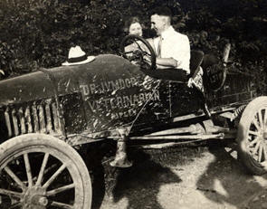

M emories Restored Brings Your Photographs Back to Life
 Photographs are a family heirloom, to be passed on to your children and your children's children. If you have a photographgraph you've given up on, send it to us. We've never met a photographgraph we couldn't fix. Our photographgraph restoration technicians can fixed torn, stained, scratched, and faded photographgraphs. Our work is not only technically proficient, but also artistically pleasing. We can color black and white photographgraphs, add or remove backgrounds and people, and touch up portraits.
{kind=link}
We've been restoring photographgraphs for over 30 years. Our technicians receive rave reviews from individual customers, as well as from historical societies and museums.
Our reasonable fees mean that although your memories may be priceless, it won't cost you a fortune to use our services.
Our restoration experts can:
- Restore damaged photographgraphs
- Enhance and touch up photographgraphs
- Create high-quality scans and DVDs of photographgraphs
- Add and remove backgrounds and people from photographgraphs